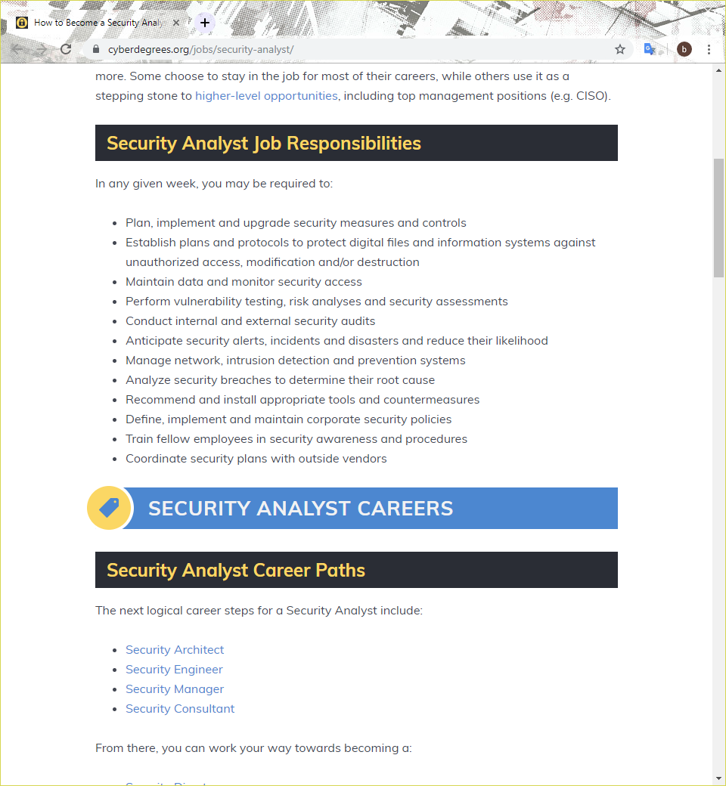
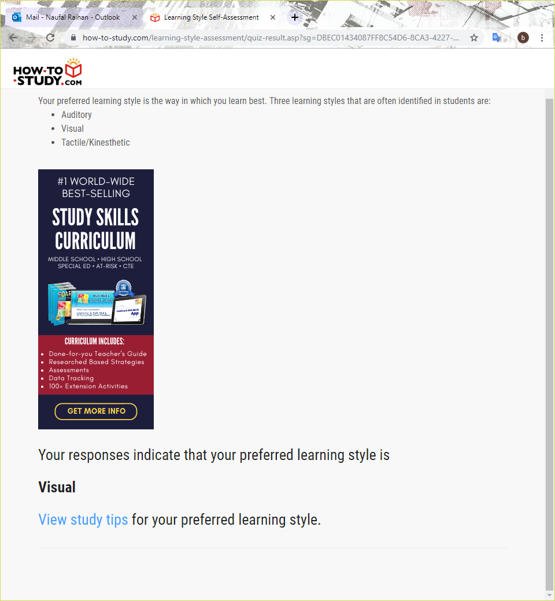
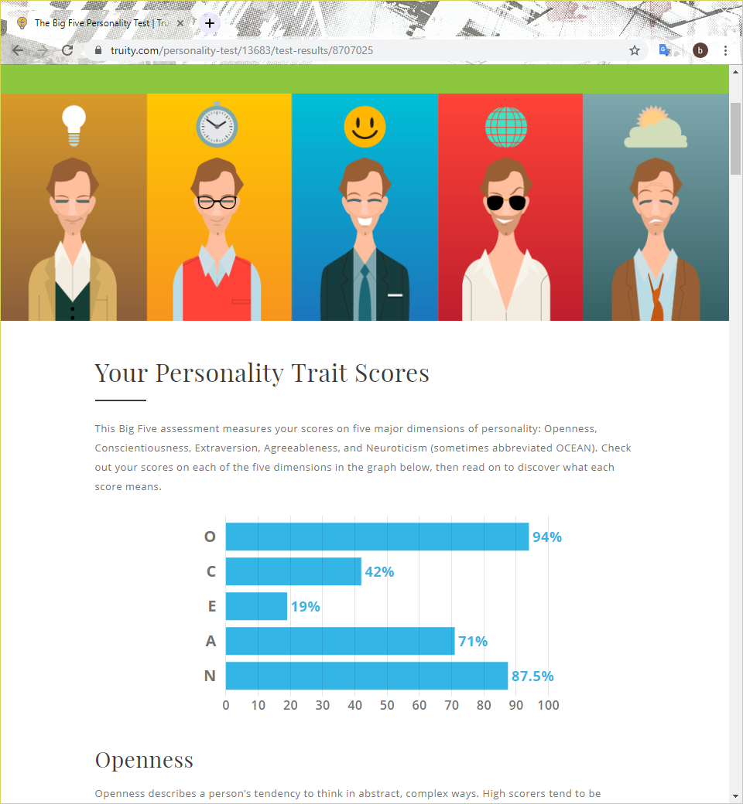

Introduction

An IT based student, currently studying Bachelor of Information Technology in RMIT University. Been in IT since a kid and playing with virtual machines.
I'm always interested to study IT, especially cyber security.
Welcome to my Profile!
An IT based student, currently studying Bachelor of Information Technology in RMIT University. Been in IT since a kid and playing with virtual machines.
I'm always interested to study IT, especially cyber security.

I always interested in it since a litte. I got my first computer in 2004 and it was still using Windows 98. No internet at that time, so I spent a lot of time in the computer by inspecting the OS, try to troubleshoot problems etc. In 2009, the first time I use internet, I try online games, and then try to play with virtual machines and install the old OS in the VM.
I choose RMIT because RMIT is one of the top universities in Melbourne to study Information Technology. RMIT also provides good facilities to support the IT program, and also located in the CBD, so it is easy to get there.
In this course, I'm expecting to learn skills for my future job, and also get soft skills like communications, teamwork etc. that would be useful for life.

A cyber security analyst is a job that detects and prevent cyber threads to an organisation.
https://www.cyberdegrees.org/jobs/security-analyst/ For hard skills, there only few skills that i have learnt, those are:
I will obtain other skills from this Bachelor of IT course, other short courses, internships, seminars, and some online tutorials
This is a MBTI test show 16 personalities. It says INTJ-T = Introverted, Intuitive, Thinking, Judging, Turbulent.
This test shows my preferred learning style. The result shows that my preferred learning style is Visual.
The Big 5 Personality test shows the 5 major dimensions of personality (OCEAN):
I'm going to create a project called "Search by Music". It's a search engine, but to find a specific music. It will recognize the audio that being recorded and will find the music that match from the recording. It's almost similar with Search by Voice by Google, but it's more specific only for finding specific music that we heard but we don't know the song title. The program will be web based program that requires a browser to access. It will be availabe in the desktop, tablets, and mobile. By playing a few of notes or some lyrics, the program will detect the song and try to get the information of it.
Music is a product of an art that results in a form of sound. There are many genres of music in this world. Everybody loves music. Even you are not a musician, you still listen to music, when on the train, for studying, etc. In this era, it is easier to get music, for example is Spotify, you just need to subscribe and get a lot of music legally. Some people may be still interested in CDs and Vinyls, but sometimes, we need something more easier to use. Some people may heard some good song in radio, television, or maybe pass by a street musician and hear some good songs that they don't know the title.
The app is developed using Java and PHP. It receives the user input as an audio, converting the audio to be readable in the program, and then the program will search in the internet database that matches the input.
The interface will use bright colours so it is easy to see. Using simple design and serif fonts for compatibility on various devices and browsers.
When the program started, the users can click on the voice recording chat to record manually or uploading a file containing the music. The file allowed only audio files, so if there is any video file, it should be converted to audio format first, then the users can upload the file. This program also detects which key that the song is being played, the tempo, and also give the details of the song. This include which album the song is included, the duration, release date, etc. The program may not be very accurate but will be improved over time to get the best result.
The program is programmed using Java and PHP. Java is used in many software developments, especially mobile applications (Android). I may use some musical instrument to test if the app can detect specific note. Guitar is preferred beacause it is easy to carry. Digital piano also may be used. We use Eclipse for Java IDE for Windows. For the PHP I use Sublime Text. I am using Windows computer to develop this program. Mobile phones and Tablet is also used for testing the program. Multiple browsers also needed because it is a web based application that search the information through the internet.
Skills that is required is programming language, especially in Java. A basic knowledge of music theory is also needed to determine the specific note that is used for the music. The music could be referenced to wikipedia for detailed information, but preferable if has the detailed knowledge of the song. A high end system may be good for programming, but mid end is enough. Some mobile phones and tablet could be used for testing compatibilities in various devices. Of course we need the microphone for testing, because it need to use voice recognition. A good speaker also may be needed.
With this program released, hopefully people can be helped by running this program. I always thinking about this program should be implemented on most search engines, because it really useful. Searching music can be done more easily, if we know some lyrics it would not be a problem, but if we don’t know the lyrics or the song is instrumental only, this program may help a lot. The program will be updated regularly to check improve the quality, and for the best experience for user to use the program. I expected some feedback from the users to keep the app improving and give the best experience to the users.